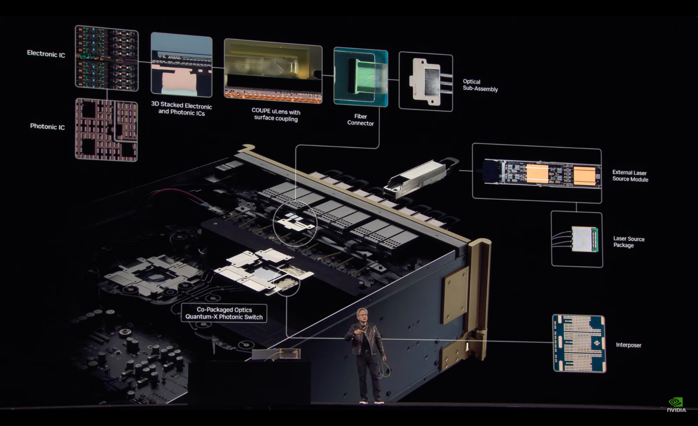
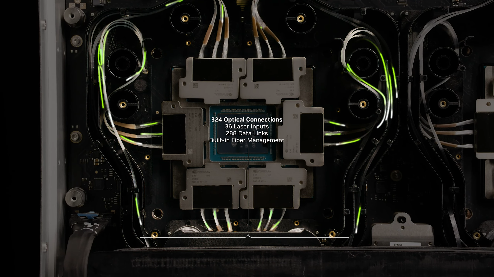

ចេញផ្សាយ៖ 30 ឧសភា 2025
សព្វថ្ងៃនេះចំនួននៃ Transistors (binary switches ដែលជាភាសានៃកុំព្យូទ័រ) នៅក្នុង microprocessor កើនឡើងទ្វេដងរៀងរាល់ឆ្នាំ។ ដើម្បីបំពាក់ត្រង់ស៊ីស្ទ័រកាន់តែច្រើនទៅក្នុងបន្ទះ Chip ពួកវាត្រូវតែធ្វើឱ្យតូចជាងមុន ដែលនាំឱ្យដំណើរការលឿនជាងមុន។ ដោយសព្វថ្ងៃនេះគេអាចផលិតវាបានក្នុងទំហំដល់តូច 3nm ដែលតូចជាងសសៃសក់មនុស្ស ជាង 30,000 ទៅ 40,000 ដងឯណោះ។ ដែលអាចមានចំនួនចាប់ពី រាប់ពាន់លាន ដល់ ពាន់ពាន់លាន transister ឧទាហរណ៍ដូចជា Intel Broadwell-EP Xeon មាន 7.2 ពាន់លាន transistors ខណៈពេលដែល 32-core AMD Epyc មាន 19.2 ពាន់លាន។ ថ្មីៗនេះ បន្ទះឈីប AI មួយចំនួនដូចជាបន្ទះឈីបជំនាន់ទី 2 របស់ Graphcore ត្រូវបានរចនាឡើងសំរាប់ Machine learning ធំៗ ដោយចំនួន transistor ឈានដល់ 60 ពាន់លាន ឬ 120 ពាន់លាន។ហើយ ចំណែក Chip AI Blackwell របស់ Nvidia ដែលទើបនិងប្រកាសវិញ មានចំនួនដល់ទី 208 ពាន់លានឯណោះ។
តើការ បង្កើនចំនួនបែបនេះមានផលវិបាកដែរឬទេ? ការបង្កើនចំនួននៃត្រង់ស៊ីស្ទ័រនៅក្នុងមីក្រូឈីប គឺបណ្តាលឱ្យមានកំដៅកាន់តែក្តៅខ្លាំង ប្រសិនបើដំណើរការគណនាកាន់ច្រើន ត្រង់ស៊ីស្ទ័រធ្វើការផ្ទេរទិន្នន័យពីមួយទៅមួយកាន់តែច្រើននាំអោយចរន្ត(អេឡិចត្រុង)មានកាន់តែច្រើន ដែលបណ្ដាលធ្វើអោយ Microchip កាន់តែឡើងកម្តៅ។ តើអ្វីទៅជា Light-Based Computing? Photonic computing ជាការគណនាដែលប្រើពន្លឺ គឺជាការប្រើប្រាស់ Photon (ពន្លឺ) ពីឡាស៊ែរ ឬឌីយ៉ូតក្នុងគោលបំណងក្នុងការគណនា។ សម្រាប់គ្រឿងអេឡិចត្រូនិច និងគ្រឿងកុំព្យូទ័សព្វថ្ងៃភាគច្រើនប្រើប្រាស់ អេឡិចត្រុងសម្រាប់ការគណនា។ Optical Computer ប្រើប្រាស់ត្រង់ស៊ីស្ទ័រអុបទិក (Optical Transistor) ខណៈពេលដែលទិន្នន័យត្រូវបានបញ្ជូនតាម Photons( ពន្លឺ)ព័ត៌មានត្រូវបានផ្ទេរដោយប្រើខ្សែកាបអុបទិក (Fiber Optic)។ ប្រសិនបើ Optical Computer ដំណើរពេញលេញនោះ អត្ថប្រយោជន៏ដ៏សំខាន់របស់វានោះគឺ មិនចាំបាច់បំប្លែងព័ត៌មានទៅជាប្រព័ន្ធគោលពីរនោះទេ ដែលធ្វើអោយល្បឿនគណនាដំណើរការកាន់តែលឿន។ដើម្បីធ្វើឱ្យការគណនាផ្អែកលើពន្លឺមានមុខងារពេញលេញ ចាំបាច់ត្រូវមានមីក្រូឈីបដែលប្រើ photons ជំនួសឱ្យអេឡិចត្រុង។ អត្តប្រយោជន៏ នៃ Photonics Computing
ក្ទោះបីជាវាមិនទាន់ចេញជារូបរៀងពេញលេញ តែក័មានក្រុមហ៊ុនមួយចំនួនបាននិងកំពុងអភិវឌ្ឍន៏វាផង ដូចជាក្រុមហ៊ុន QANT បានបញ្ចេញ Commercial light-based computer chip ហៅថា NPU សំរាប់ប្រើលើ Machine learning, AI trainning។ ចំពោះការផ្ទេរទិន្នន័យវិញ ក៏មានក្រុមហ៊ុនជាច្រើនបានបញ្ចេញ Optical interconnects (ខ្សែរ fiber ដែលភ្ជាប់ចេញពី Circuit ឬ System ដោយប្រើប្រាស់ពន្លឺ) សំរាប់ Data Center របស់ខ្លួន ដូចជា Nvidia ជាដើម។ ដូចនេះ នៅថ្ងៃអនាគតគេអាចនិងយកវា ប្រើប្រាស់លើ Microprocessor ជាក់ជាមិនខាន។ប៉ុន្តែឧបសគ្គដ៏ធំនោះគឺទំហំ ព្រោះថាបើចង់អោយ Microprocessor ប្រើប្រាស់ពន្លឺជំនួសអោយ Electronic Trasistor នោះដែលតម្រូវអោយពន្លឺនោះមានទំហំតូចបំផុត៕នៅក្នុងទ្រឹស្ដីនៃអាតូម ពន្លឺមានទំហំធំ ដែលផ្តល់នូវឧបសគ្គនៅពេលព្យាយាមប្រើបច្ចេកទេសដើម្បីពត់ពន្លឺនៅខាងក្នុងមីក្រូឈីប (ដោយពន្លឺដែលយើងអាចមើលឃើញសព្វថ្ងៃមានទំហំធំជាងអាតូម ប្រហែល 1000 ដង)។